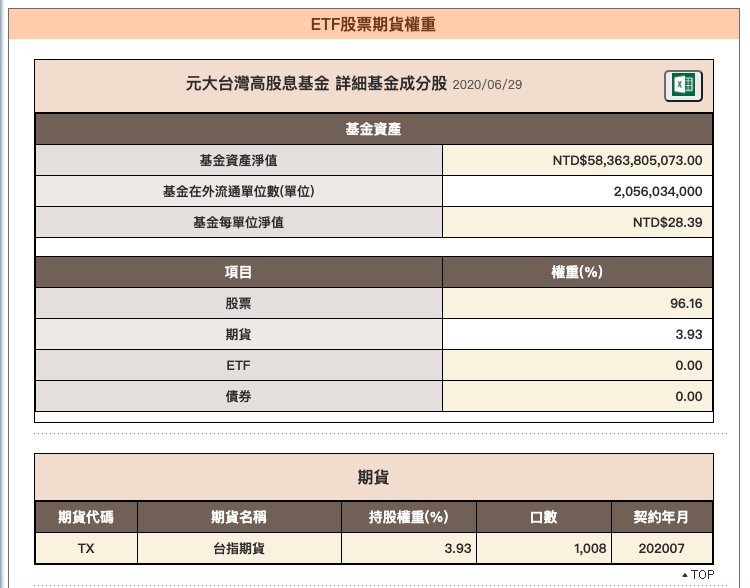

追蹤新聞
0056高股息ETF即將換股，剔除五檔個股，本周小心「這檔」出現人踩人慘況！
重點
- 0056高股息ETF每半年換股一次(最多五進五出)
- 本次換股清單
- 踢除：「國巨 2327 」、「台化 1326 」、「大成鋼 2027 」、「南亞科 2408 」、「台勝科 3532 」
- 加入：「義隆 2458 」、「中鼎 9933 」、「健鼎 3044 」、「福懋 1434 」、「京城銀 2809 」
- 生效日期：2020/6/22
- 過渡期間：2020/6/22～6/30
- 因為0056已是一檔市值 615 億台幣的龐然大物，在換股時會出現踩踏效應，也就是踢除的股票強烈賣壓，加入的股票強烈買盤
新聞內容查證
ETF市值

資料來源：元大投信
已經查不到6/18當時的市值，但現在583億相差不遠
ETF換股時機
成分股調整
一般而言，臺灣高股息指數之成分股隨採樣母體(臺灣 50 指數與臺灣中型 100 指數成分股)之變動而調整，但由於臺灣高股息採取較複雜的成分股檢核程序，因此通常只隨採樣母體同步刪除成分股，新增成分股將俟指數本身進行定期審核時，再做必要調整。
A.定期審核
由市場專業人士所組成之「臺灣指數系列諮詢委員會」，依據指數編製基本規則，負責成分股之定期審核。臺灣高股息指數之定期審核訂於每年六月與十二月第一個星期五，與臺灣50 指數及臺灣中型100 指數之季度審核同時進行，並分別採用生效日四週前的週一收盤資料為審核依據；其中，於半年度審核亦同時進行流動性標準檢驗。成分股定期審核之變動，於審核會議當月第三個星期五後的下一個交易日執行，以連續五個交易日為指數定期審核過渡期。
審核時，若於審核前已公告前一財務年度不配發股息者將不符合指數資格，自成分股中刪除。若採樣母體中，有非成分股公司之未來一年預測現金股利殖利率排名上升至第15名以上，即可納入作為成分股；而若有現有成分股公司之未來一年預測現金股利殖利率排名下降至第46 名以下，即應自成分股中刪除。為避免成分股大量變動，每次半年度審核時，成分股調整數目以納入5支及刪除5支為上限。
發行股數及公眾流通量之調整
A.為避免產生大量不明顯的變動，只有在指數成分股的發行股數累計變動超過 1%，該成分股的發行股數才會依下列原則進行調整。(a)若因企業活動(如發放股票股利、現金增資等)導致發行股數變動者，於企業活動生效日同時進行調整。
(b)若非因企業活動（如可轉換公司債轉換為股票、買回庫藏股等）導致發行股數變動者：
- 當發行股數變動累計超過1%但未達10%時，於三、六、九和十二月第三個星期五收盤後定期進行調整。以審核月份前一個月的第三個星期三收盤為該等變動資料之截止時間點。
- 當發行股數變動累計達10%以上，該變動將在季度定期調整間立即執行，於發布技術通知並經5 個營業日之後生效。
半年度調整
半年度審核，審核生效日四週前的週一若指數成分股沒有交易，則使用前一交易日收盤之價格資料，且權重限制調整於審核月的第三個星期五收盤後(亦即下星期一開盤生效)。半年度審核及季度之權重限制調整，自指數審核生效日起之連續五個交易日為指數定期審核過渡期，此期間每檔股票之權重採用過渡期間權重。
換股追蹤
| 股票 | 0056 20200531持張數 |
20200619 5日平均交易量(張) |
20200630 5日平均交易量(張) |
20200619 收盤價 |
20200630 收盤價 |
|
|---|---|---|---|---|---|---|
| 踢除 | 國巨 2327 | 7317 | 16485 | 20005 | 404.5 | 381 |
| 踢除 | 台化 1326 | 17577 | 8859 | 12729 | 73.1 | 75.7 |
| 踢除 | 大成鋼 2027 | 71707 | 9910 | 21319 | 26 | 26.25 |
| 踢除 | 南亞科 2408 | 6232 | 14907 | 13210 | 59.8 | 61 |
| 踢除 | 台勝科 3532 | 22891 | 2497 | 5329 | 132 | 137 |
| 加入 | 義隆 2458 | 10483 | 10698 | 126.5 | 120.5 | |
| 加入 | 中鼎 9933 | 4964 | 8484 | 39.4 | 39 | |
| 加入 | 健鼎 3044 | 3946 | 7453 | 134.5 | 131 | |
| 加入 | 福懋 1434 | 8076 | 18623 | 39.95 | 36.4 | |
| 加入 | 京城銀 2809 | 7874 | 12050 | 39.5 | 35.9 |
- 0056在6/19與6/30兩日剛好都收在28.56
- 大盤在6/19~6/30上漲了71.38(0.6%)
結論
在換股這段時間的確會讓影響的個股交易量放大，但對價格的影響不大，不像新聞裡所說的出現踩踏的現象